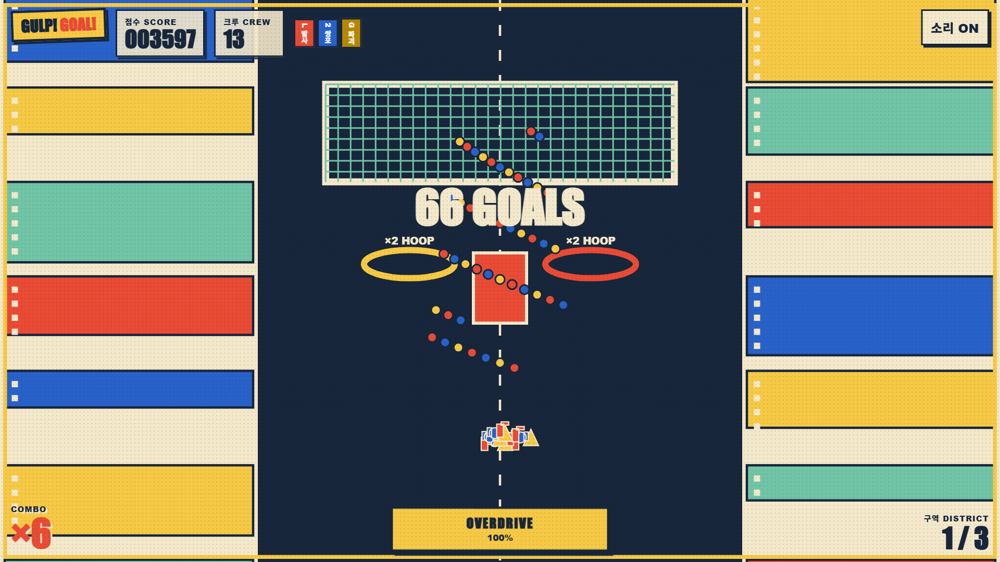
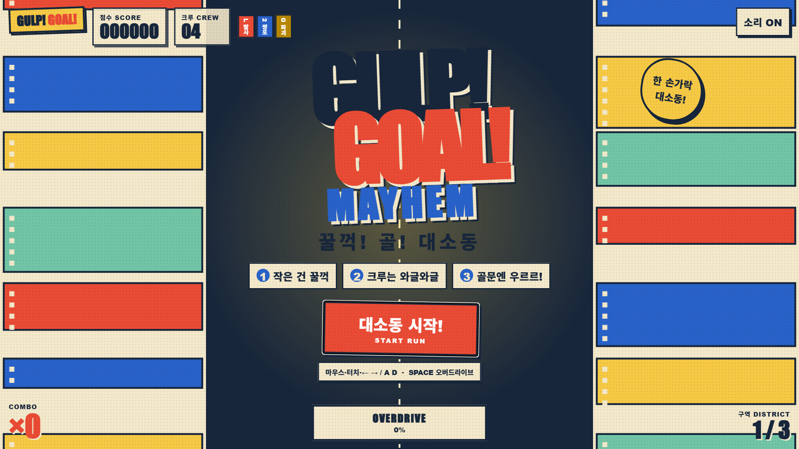
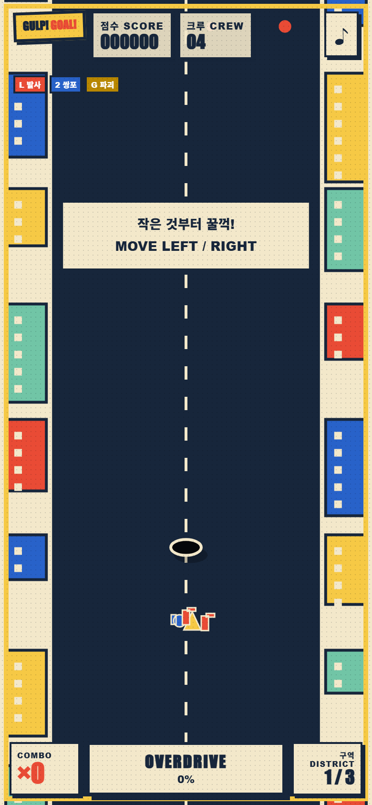

작게 먹고 크게 쏜다
포털보다 작은 대상은 성장 자원이 되고, 큰 대상과 위험물은 충돌 페널티가 됩니다. 먹기의 판단이 곧 크루·콤보·발리 화력으로 환산됩니다.
GAME 09 PAPER CITY VOLLEY
꿀꺽 성장한 포털과 세 가지 크루가 도시 전체를 공으로 채우는 원포인터 하이퍼캐주얼 매시업. 먹고, 고르고, 조준하는 하나의 루프가 세 구역의 결승까지 이어집니다.
PLAY PUBLIC WEB BUILD →
01 · ONE CONNECTED LOOP
원포인터로 차선을 조향해 포털보다 작은 합법 물체만 삼키면 포털 크기·콤보·오버드라이브 충전이 함께 자랍니다. 캡슐은 launcher, twin-popper, goalie-breaker의 3종 크루를 보태고, 의미 있는 +8 CREW / ×2 VOLLEY / FOCUS 차선 게이트 선택이 다음 발리의 형태를 바꿉니다.
관중·크기·콤보·게이트가 자동 발리의 논리 공 수를 최대 999999까지 키우되 화면 파티클은 제한해 읽기 쉬움을 지킵니다. 앞선 구역에서는 후프를 겨냥하며 중앙 블로커를 피하고, 마지막에는 움직이는 최종 골키퍼 반대편을 조준합니다. 충전이 가득 찼을 때만 버튼이나 Space로 수동 발동하는 5초 오버드라이브가 먹기와 다음 발리를 증폭합니다.
각 seed는 같은 코스를 재현하며, 목표 득점 달성 여부에 따라 진짜 승리와 패배가 갈립니다. best score를 저장하고 결과 화면의 replay로 즉시 다시 도전할 수 있습니다.
포털보다 작은 대상은 성장 자원이 되고, 큰 대상과 위험물은 충돌 페널티가 됩니다. 먹기의 판단이 곧 크루·콤보·발리 화력으로 환산됩니다.
launcher, twin-popper, goalie-breaker는 캡슐에서 합류하는 서로 다른 시각적 크루 원형입니다.
공이 많아져도 후프·블로커·골키퍼에 맞춘 좌우 조향이 득점을 결정합니다.
오버드라이브는 충전 100%에서만 수동으로 시작됩니다.
02 · PAPER CITY SCREENS


03 · AUTHORSHIP & RELEASE
오리지널 테이블탑·에디토리얼 종이 도시 룩을 아트 디렉션하고, 복사한 에셋 없이 Canvas 2D 코드 그래픽과 절차적 비주얼, Web Audio 사운드를 직접 작성했습니다. 게임 기획, 결정론 시스템, 밸런스와 QA까지 수행했으며, 정적 싱글 플레이·오프라인 릴리스의 소스 Node 테스트 28/28와 Chromium smoke가 통과했습니다.